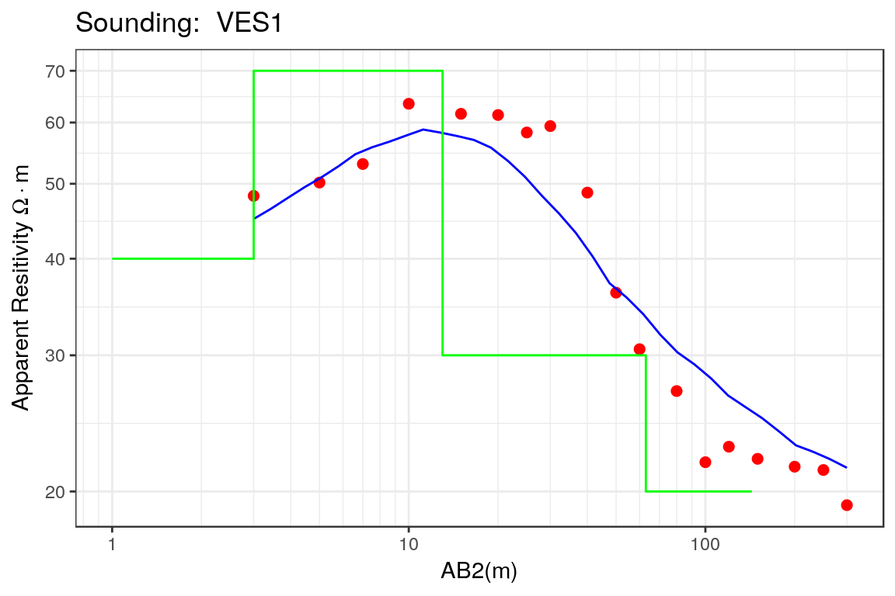
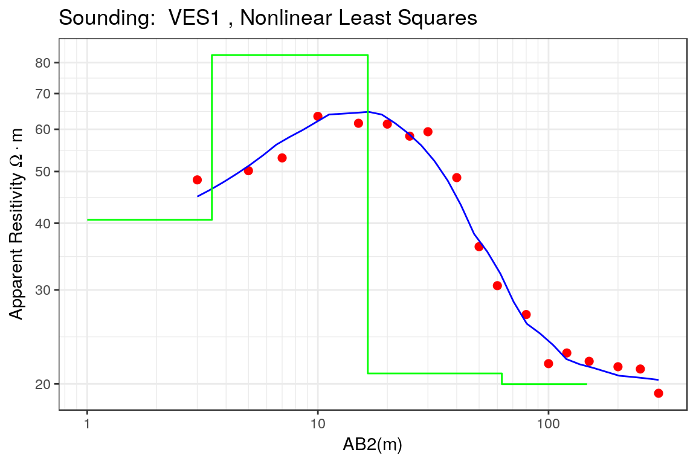
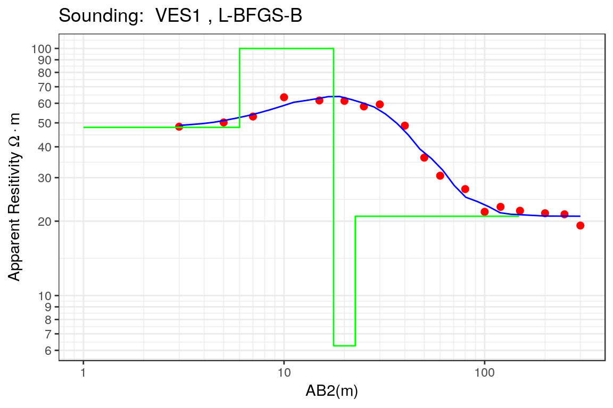
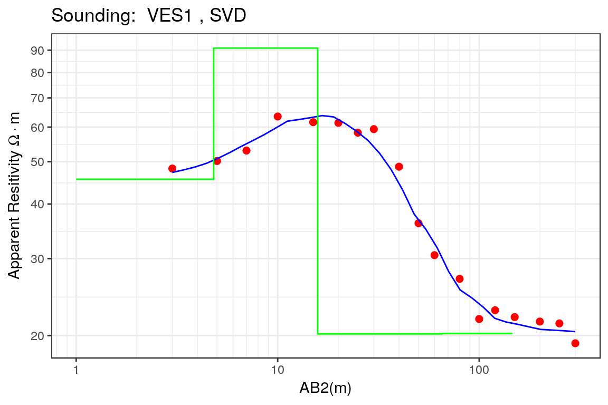

The Vertical Electrical Sounding (VES) is one of the oldest resistivity methods, and it is based on the measurements of the electrical apparent resistivity of the geological medium when the distance between the electrical source and the measurement nodes is increased. The main advantages of the VES include:
From the information usually acquired during a VES (apparent resisitivities vs electrode spacing), the true resistivities and thicknesses of the layers present in the subsurface are estimated, which in turns can help to the Geophysicist in the definition of a simple layered geological model of the area. When several VES are located along a given section, then the lateral variations of the layers can be interpreted yielding to an improved description of the geological structure.
Let \(A,B\) be the current electrodes (positive and negative respectively) located on the ground surface and \(M,N\) are the sensors used to measure the potential. The apparent resistivity of an Earth material is defined as:
\[ \rho_{app,k} = k \frac{U_{MN}}{I_{AB}} \] where \(k\) is the so called geometric factor of the electrode array, \(U_{MN}\) is the voltage between the electrodes \(M\) and \(N\) and \(I_{AB}\) is the electric current applied between the measurement electrodes \(A\) and \(B\).
The geometric factor of the array is defined as: \[ k=\frac{2 \pi}{\frac{1}{r_{AM}} - \frac{1}{r_{BM}} - \frac{1}{r_{AN}} + \frac{1}{r_{BN}} } \] where \(r\) is the distance between the electrodes.
The values of the apparent resistivity \(\rho_{app,k}\) change as the electrode separation \(AB/2\) is increased.
An essential part of the estimation of the real resistivitis and thicknesses of the layer in the area where the VES was obtained is the ability to calculate the apparent resistivity values from the knowledge of the number of layers, their true resistities and thicknesses. These parameters can be estimated matching the apparent resistivity curve to the measured apparent resistivities. The most efficient procedure to calculate this apparent resistivity curve is the methodology of the linear filter originally proposed by GHOSH (1971) and improved by GUPTASARMA (1982). This approach is divided in two stages:
The electric potential of a horizontally layered Earth is given by:
\[ U(x)=\frac{I \rho_{1}}{2 \pi} \frac{1}{x} \left( 1 + 2x \int_{0}^{+\infty} K(\lambda) J_{0}(\lambda x)d\lambda \right) \] where \(\rho_{1}\) is the resistivity of the first layer, \(J_{0}\) is the Bessel function of order zero , and \(K(\lambda)\) is the Kernel function that depends on \(\lambda\) and the resisitivities and thicknesses of all layers and the resistivity of the substratum. The previous equation can be simplied to: \[ U(x)=\frac{I \rho_{1}}{2 \pi} \int\limits_{0}^{\infty} T(\lambda) J_{0}(\lambda x) d\lambda \] where \(T(\lambda)\) is called the resistivity transform which is defined as: \[ T(\lambda)=\rho_{1}\left(I+2K(\lambda)\right) \]
The apparent resistivity of a Sclumberger array can be obtained from the Ohm’s Law and the expression of the electric potential showed in the previous section: \[ \rho_{\text{app}}(x)=-\frac{2\pi}{I}x^{2} \left( \frac{\partial U}{\partial r} \right) \] which can be expressed as: \[ \rho_{\text{app}}(x)=x^{2}\int\limits_{0}^{\infty}T(\lambda)J_{1}(\lambda x) \lambda d\lambda \] where \(T(\lambda)\) is the resistivity transform, \(J_{1}(\lambda x)\) is the Bessel function of order 1.
An expression of the resistivity transform \(T(\lambda)\) is given by: \[ T(\lambda)=\int\limits_{0}^{\infty} \left[ \rho_{\text{app}}(x) J_{1}(\lambda x)/x \right]dx \] which can be obtained by applying the Hankel’s inversion of the Fourier-Bessel integral of the apparent resistivity function for a Schlumberger array. Using the following variables: \[ \begin{aligned} s&=\log{x}\\ r&=\log{(1/\lambda)} \end{aligned} \] then the expression of the resistivity tranform is given by: \[ T(r)=\int\limits_{-\infty}^{+\infty}\rho_{\text{app}}(s)J_{1}(1/\exp{(r-s)})ds \] which is a convolution integral that can be easily solved in the frequency domain: \[ T(\omega)=G(\omega) H(\omega) \] where \(T(\omega)\) is the Fourier transform of the resistivity transform \(T(\lambda)\), \(G(\omega)=\mathcal{F}[\rho_{\text{app}}(x)]\) is the Fourier transform of the apparent resistivity data, and \(H(\omega)=\mathcal{F}(J_{1}(1/\exp{(x)}))\) is the Fourier transform of the Bessel function of order 1. In the Geophysics literature, this Fourier transform is the Transform of the linear filter and it can be obtained from the ratio of the Fourier transform of \(T(\lambda)\) and the Fourier transform of the \(\rho_{\text{app}}(x)\).
In practical problems, \(T(\lambda)\) can be easily calculated using some kind of recurrence relationship, and if the transform of the linear filter \(H(\omega)\) is available then it is possible to calculate \(G(\omega)\) and therefore the apparent resistivity curve \(\rho_{\text{app}}(x)\). In other words, this defines a procedure to solve the forward problem of a electrical sounding.
In the previous section, the problem of calculating the apparent resistivity curve \(\rho_{\text{app}}(x)\) from a given set of real resistivities \(\rho_{\text{real},i}\) and layer thicknesses \(h_{i}\) was solved using the ratio of two Fourier transforms. This is a required tool in order to solve a more interesing problem: from the measurements of the apparent resistivity obtain the true resistivities and thicknesses of the layers present in the subsurface. Finding the number of layers and their true resistivities and thicknesses is a parameter estimation problem and there are many different techniques that can be used in its solution.
Let \(\left[x_{i}, \rho_{\text{app}}(x_{i}), i=1,\ldots,n\right]\) be a typical VES where \(x_{i}\) represents the electrode separation or \(AB/2\) and \(\rho_{\text{app}}\) the corresponding apparent resistivity measurements. Let \(\boldsymbol{\theta}=(\rho_{1}, \rho_{2}, \ldots, \rho_{nL}, t_{1}, t_{2}, \ldots, t_{nL-1})\) be a parameter vector containing the layer true resistivities \(\rho_{i}, i =1,\ldots,nL\) and thicknesses \(t_{i},i=1,\ldots,nL-1\). The forward model defined in the previous section and the parameter vector enables us to calculate the apparent resistivity \(\bar{\rho}_{\text{app}}(x,\boldsymbol{\theta})\) and this response is compared to the measured apparent resistivities using an objective function defined as: \[ OF(\boldsymbol{\theta})=\sqrt{\frac{1}{n}\sum_{i=1}^{n} \left[ \rho_{app}(x_{i})-\bar{\rho}_{app}(x_{i}, \boldsymbol{\theta})\right]^{2}} \]
The parameters of the model \(\boldsymbol{\theta}^{*}\) are the values of the parameter vector that minimize the objective function defined in the previous equation: \[ \boldsymbol{\theta}^{*}=\min{OF(\boldsymbol{\theta})} \] The values of \(\boldsymbol{\theta}^{*}\) can be estimated using different optimization techniques including the conventional ridge regression (or nonlinear least-squares using the Levemberg-Marquard algorithm), or Global Optimization Techniques such as Simulated Annealing, Genetic Algorithms, Differential evolution, etc.
The first step in the interpretation of a VES is to load the rves package:
library(rves)For this example, the VES ves_data1 included in the package is used to test the different functions included in rves:
data("ves_data1")The electrode spacing and the apparent resistivity values are defined:
ab2 <- ves_data1$ab2
apprho <- ves_data1$apprhoand these are used to define the VES object inside R:
sev1a <- ves(id= "VES1", ab2 = ab2, apprho = apprho)The plot of the VES used as example can be seen in the following plot:
p1 <- plot(sev1a, type = "ves")An initial model (true resistivities and thicknesses) is obtained from visual inspection of the previous plot:
rho <- c(40,70,30, 20)
thick <- c(2,10,50,500)
sev1a$rhopar <- rho
sev1a$thickpar <- thick
sev1a$interpreted <- TRUEand this initial model is plotted:
p2 <- plot(sev1a,type="ves")
print(p2) As seen in the previous plot, the proposed model (blue line) is not a good explanation of the measurements (red points), which is also corroborated by the relative error:
res <- apparent_resistivities(rho, thick, filt=filt$V1, ab2)
rerr <- 100*abs(res$appres-apprho)/res$appres
print(rerr)
#> [1] 7.095863 1.201653 4.085640 9.594723 7.111025 11.952279 14.757161
#> [8] 26.399793 18.124039 1.265088 10.960138 11.025177 23.254249 13.939657
#> [15] 12.244097 6.279988 4.032997 10.528123
print(mean(rerr))
#> [1] 10.76954The relative error is still larger than 10% and therefore a proper estimation method is required. The first method to be used in the parameter estimation of the Earth model is the nonlinear least squares, which is a fast method and a small number of iterations is required:
par0 <- c(rho, thick)
res.nls <- calibrate_nls(sev1a, par0, iterations = 10, ireport = 5)
#> iteration, RSS, Rel Error = 0 0.0026274 3.394969
#> iteration, RSS, Rel Error = 5 0.000757266 1.782435
#> iteration, RSS, Rel Error = 9 0.0005737962 1.563724
rel.err.nls <- format(res.nls$rel.err, digits = 3)After 10 iterations the relative error is of 1.56% which can be considered as a good model. Now these estimated parameters are assigned to the VES object:
sev1a$rhopar <- res.nls$rho
sev1a$thickpar <- res.nls$thickness
sev1a$interpreted <- TRUEand the results are plotted:
p1 <- plot(sev1a, main = "Nonlinear Least Squares", type = "ves")
print(p1)
The estimated model (blue line) is closer to the apparent resitivity measurements (red points) and now this model can be considered as a good representation of the geological structure.
It is always a good practice to use another method for the estimation of the parameters of the Earth model. The Quasi-Newton method with limited memory is a method that use derivatives and the limits of the search region can be specified (lower and upper arguments of the calibrate function):
res.lbfgs <- calibrate(sev1a, opt.method = "L-BFGS-B", obj.fn = "rss",
par0 = par0, lower = c(rep(5,4), rep(5,4)),
upper = c(rep(100,4),rep(501,4)))The relative error in this case is equal to 4.45 % which is a small improvement with respect to the nonlinear squares case. Again, the estimated parameters are assigned to the VES object:
sev1a$rhopar <- res.lbfgs$rho
sev1a$thickpar <- res.lbfgs$thickness
sev1a$interpreted <- TRUEand the results are plotted:
p2 <- plot(sev1a, main = "L-BFGS-B", type = "ves")
print(p2)
The model estimated using Quasi-Newton method is similar to the model estimated using non-linear squares as seen in the plot, but the main difference is that the third layer has a smaller thickness and resistivity when compared to the nonlinear squares result. This result highlights the fact of the non-uniqueness of solution of the inverse problem.
Other approach to estimate the parameters of the Earth model is based on the use of damped least squared using the Singular Value Decomposition of the Jacobian matrix, which can be used with the calibrate_svd function:
res.svd <- calibrate_svd(sev1a, par0 = par0, iterations = 10, ireport = 5)
#> iteration, RSS, Rel Error = 0 0.1071227 16.03594
#> iteration, RSS, Rel Error = 5 0.008289606 4.411655
#> iteration, RSS, Rel Error = 9 0.008289606 4.411655
rel.err.svd <- format(res.svd$rel.error, digits = 3)The relative error obtained in this case is equal to 4.41 % which is similar to the values obtained with nonlinear least squares and the Quasi-Newton method. Again the resulting parameters are assigned to the VES object:
sev1a$rhopar <- res.svd$rho
sev1a$thickpar <- res.svd$thickness
sev1a$interpreted <- TRUEand the results are shown in the following figure.
p3 <- plot(sev1a, main = "SVD", type = "ves")
print(p3)
The layer model estimated using this methodology is very similar to the obtained with the previous methods, and there is a good fit between the measurements (red points) and the estimated model (blue line). The main difference lies in the contrast of the resistivity of the third and fourth layers that in this case is very small when compared to the values previously estimated. This implies that the two lower layers can be combined in a single layer which would define the substratum of the Earth model.
GHOSH, D. P. 1971. “THE APPLICATION OF LINEAR FILTER THEORY TO THE DIRECT INTERPRETATION OF GEOELECTRICAL RESISTIVITY SOUNDING MEASUREMENTS.” Geophysical Prospecting 19 (2). Wiley-Blackwell: 192–217. doi:10.1111/j.1365-2478.1971.tb00593.x.
GUPTASARMA, D. 1982. “OPTIMIZATION OF SHORT DIGITAL LINEAR FILTERS FOR INCREASED ACCURACY.” Geophysical Prospecting 30 (4). Wiley-Blackwell: 501–14. doi:10.1111/j.1365-2478.1982.tb01320.x.